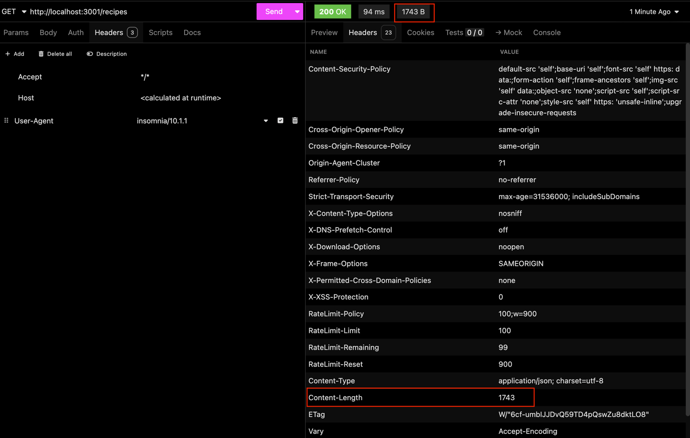
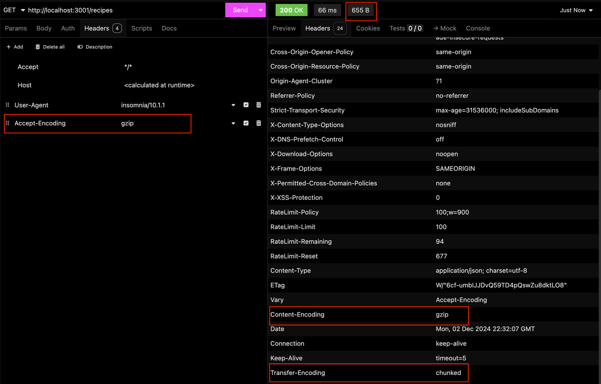

8.5 - Compression: Compressão de Respostas HTTP
Reduzir o tamanho das respostas HTTP é uma prática importante para melhorar o desempenho de aplicações web. O middleware compression facilita esse processo, aplicando compressão Gzip ou Brotli às respostas do servidor, resultando em transferências de dados mais rápidas e uma melhor experiência para o usuário final.
O que é o Compression?
O Compression é um middleware para aplicações Express que compacta automaticamente as respostas enviadas pelo servidor. Ao reduzir o tamanho das respostas HTTP, ele diminui a quantidade de dados transmitidos pela rede, acelerando o carregamento de páginas e economizando largura de banda.
Principais Benefícios
-
Redução de uso de largura de banda: Diminui significativamente o tamanho dos arquivos transferidos para o cliente.
-
Melhoria de desempenho: Respostas menores são transferidas mais rapidamente, proporcionando carregamento mais rápido.
-
Configuração simples: O Compression é fácil de integrar e personalizar conforme as necessidades da aplicação.
Como funciona a compressão?
A compressão funciona ao aplicar algoritmos como Gzip ou Brotli às respostas HTTP. Esses algoritmos analisam o conteúdo, identificam redundâncias e compactam os dados para transmitir um arquivo menor ao cliente. Navegadores modernos conseguem descompactar as respostas automaticamente antes de exibi-las.
Sem compressão:
- Resposta em texto simples: 200 KB.
- Tempo de transferência: 400 ms.
Com compressão:
- Resposta comprimida: 50 KB.
- Tempo de transferência: 100 ms.
Adicionando o Compression à sua Aplicação Cookmaster
Primeiro, instale o Compression na sua aplicação com o seguinte comando:
npm install -E compression@1.7.5
No arquivo src/app.js, importe e configure o compression como global:
// src/app.js
// const express = require('express');
// const helmet = require('helmet');
const compression = require('compression');
// require('express-async-errors');
// Outras Importações
// const app = express();
app.use(compression());
// Outras Configurações e Rotas
Com essa configuração, todas as respostas da sua aplicação serão compactadas automaticamente.
Teste: Antes e depois do Compression
Teste sem compressão
Faça uma requisição para qualquer rota da sua aplicação, por exemplo, GET /recipes, usando o Insomnia. Você verá que os cabeçalhos da resposta estarão parecidos com a imagem abaixo:

O que analisar:
- Content-Length: Indica o tamanho da resposta em bytes. Nesse caso, a resposta ocupa 1743 bytes.
Teste com compressão
Agora, para vermos o compression em ação, é preciso enviar na requisição o cabeçalho com a opção Accept-Encoding: gzip, igual na imagem abaixo:

O que analisar:
- Content-Encoding: Indica que a resposta foi compactada com Gzip.
- Content-Length: O tamanho da resposta agora é menor, reduzido para 655 bytes.
Com isso, você consegue verificar a eficácia do Compression diretamente na redução de tamanho das respostas.
Personalizando o Compression
Embora o Compression funcione bem com a configuração padrão, ele permite ajustes para atender às necessidades específicas da aplicação. Vamos para um exemplo de personalização:
// src/app.js
app.use(
compression({
level: 6, // Nível de compressão (0 a 9)
threshold: 1024,
})
);
Explicação das Configurações:
-
level: Define o nível de compressão. Valores mais altos proporcionam maior compressão, mas consomem mais CPU. O padrão é 6.
-
threshold: Estabelece o tamanho mínimo da resposta para ativar a compressão. No exemplo, somente respostas maiores que 1 KB serão compactadas.
Quando não usar Compression?
Embora a compressão seja geralmente vantajosa, existem cenários onde ela não é recomendada:
- Respostas pequenas: A compressão pode aumentar o tempo de processamento para respostas muito pequenas.
- CPU limitada: Em servidores com pouca capacidade de processamento, a compressão pode consumir muitos recursos, prejudicando o desempenho geral.
- Conteúdo já comprimido: Arquivos como imagens ou vídeos geralmente já estão compactados, e tentar comprimi-los novamente é desnecessário.
OBS da IA
Alternativa mais moderna
- Em produção a compressão geralmente fica no proxy/CDN (nginx, load balancer), que também oferece Brotli, mais eficiente que gzip.
Para o SAP CAP
- No BTP o approuter tem configuração de compressão (
compressionnoxs-app.json).
Minhas anotações
Atalhos: ← → navegar · Ctrl K ou / buscar